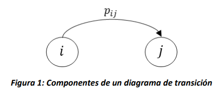
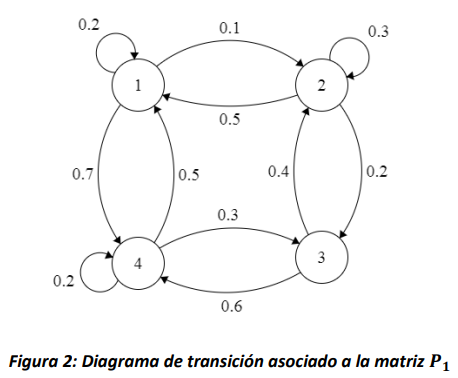
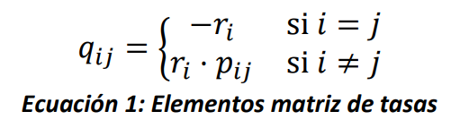
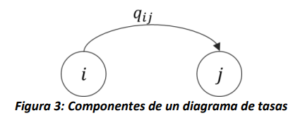
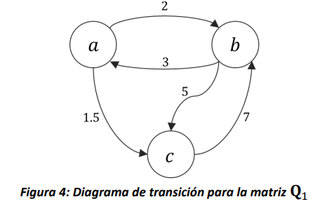

4. Cadenas de Markov#
En este capítulo se introducen los procesos estocásticos conocidos como Cadenas de Markov. Se presentan las generalidades sobre este tipo de procesos estocásticos, y se define su clasificación dependiendo de la temporalidad del proceso. Se exponen las propiedades de no memoria y de homogeneidad en el tiempo, y finalmente se presentan las matrices que permiten caracterizar la evolución del sistema en el tiempo.
4.1. Introducción#
Las cadenas de Markov son un tipo de proceso estocástico introducido en 1906 por el matemático Andréi Markov, de quien reciben su nombre.
Específicamente, una cadena de Markov es un proceso estocástico de espacio de estados discreto en el que la evolución futura del proceso sólo depende de su estado presente y es independiente de la evolución pasada del proceso. Es decir, es un proceso que cumple con la propiedad de no memoria.
A continuación, presentamos la caracterización de las cadenas de Markov de acuerdo a la temporalidad del proceso estocástico.
4.2. Cadenas de Markov de tiempo discreto (CMTD)#
Una cadena de Markov de tiempo discreto es un proceso estocástico en el que se modelan sistemas que evolucionan de la siguiente manera. El sistema entra al estado \(i\) en el tiempo \(n\), y luego de una unidad de tiempo (definida por el índice del proceso estocástico) pasa al estado \(j\) en el tiempo \(n + 1\) con probabilidad \(p_{ij}\) sin importar la evolución del sistema del tiempo \(0\) hasta el tiempo \(n - 1\).
A continuación, se presenta una definición formal de este comportamiento.
4.2.1. Definición#
Un proceso estocástico en tiempo discreto \(\{ X_{n},n \geq 0\}\) con espacio de estados discreto \(S\) es una cadena de Markov de tiempo discreto (CMTD) si cumple que:
para todos los estados \(i,j \in S\) y todo índice \(n \geq 0\). Es decir, la probabilidad de que el proceso esté en el estado \(j\) en el momento \(n + 1\) solo depende del estado del proceso en el momento inmediatamente anterior \(n\), y no de los estados por los que ha pasado antes. Esto se conoce como la propiedad Markoviana o propiedad de no memoria.
Nota
La evolución del proceso depende solo del ÚLTIMO estado observado, lo cual no es necesariamente el ÚLTIMO estado de la cadena. Es decir, supongamos haber observado el estado del proceso Markoviano \(\{ X_{n},n \geq 0\}\) por los valores del índice \(n = 0,\ 1,\ 2,\ 3\) y querer estimar la probabilidad de que en el momento 6 el valor del estado sea igual a \(j\). Estaríamos entonces interesados en determinar \(P\lbrack X_{6} = j\rbrack\) dado que conocemos una parte de la historia del proceso. Gracias a la propiedad de no memoria, esta probabilidad condicional se simplifica de la siguiente manera:
Adicionalmente, cuando la cadena de Markov también cumple con:
para todos los estados \(i,j \in S\) y todo índice \(n \geq 0\ \)se dice que es homogénea en el tiempo, lo cual significa que la probabilidad de que el proceso pase de un estado a otro no depende del tiempo en el cual se hace la observación.
Las cadenas de Markov que estudiaremos de ahora en adelante se supondrán homogéneas en el tiempo y, por definición, cumplen la propiedad de no memoria, tal como se mencionó al inicio del capítulo.
4.2.2. Matriz de probabilidades de transición \(\mathbf{P}\)#
Ya que una CMTD cumple las propiedades presentadas en la sección anterior, para estudiarlas es de interés conocer las probabilidades condicionales dadas por \(P\lbrack X_{n + 1} = j\ |\ X_{n} = i\rbrack\). Estas probabilidades, que no dependen del valor particular del índice \(n\) por la propiedad de homogeneidad, se denotan como \(p_{ij}\) y determinan la evolución del sistema en una sola transición. Así, denotaremos como \(\mathbf{P}\) a la matriz que contiene \(p_{ij}\) para todo \(i,j \in S\):
Note que \(\mathbf{P}\) es una matriz cuadrada, donde cada fila (y columna) está asociada a un estado en \(S\), y el componente de la fila \(i\) y columna \(j\) representa la probabilidad que el sistema vaya de \(i\) a \(j\) en un paso. Además, \(\mathbf{P}\) es una matriz estocástica (la suma de cada una de sus filas es 1).
Entonces, ¿una CMTD está completamente caracterizada por la matriz de transiciones \(\mathbf{P}\)? Recordemos que \(X_{n}\) es una variable aleatoria, por lo que nos interesa conocer su distribución. En particular, nos puede interesar determinar la distribución de \(X_{0}\), sin embargo, esto no es posible pues \(\mathbf{P}\) contiene probabilidades condicionales. Entonces, también es necesario conocer el estado inicial del proceso. Para esto, se define \(a_{i} = P\lbrack X_{0} = i\rbrack\), la probabilidad de que el estado inicial del proceso sea \(i\), y el vector \(\mathbf{a =}\left( a_{i} \right)_{i \in S}\). Entonces, la matriz \(\mathbf{P}\) y el vector \(\mathbf{a}\) son suficientes para caracterizar una CMTD.
4.2.3. Diagrama de transición de una CMTD#
Una forma alternativa de representar la matriz \(\mathbf{P}\) es a través de un grafo conocido como diagrama de transición. Este diagrama está compuesto por nodos y arcos, donde cada nodo representa el estado \(i \in S\) y el arco \((i,j)\) solo existe si es posible que el proceso pase del estado \(i\) al estado \(j\) en una sola transición (es decir, si \(p_{ij} > 0\)), y tiene asociado un peso \(p_{ij}\) así:

Por ejemplo, la Figura 2 muestra el diagrama de transición asociado a la siguiente matriz:

Figura 2: Diagrama de transición asociado a la matriz \(\mathbf{P}_{\mathbf{1}}\)
Note que de la misma manera que la suma de las filas de la matriz \(\mathbf{P}\), la suma de los arcos que salen de todos los nodos también debe ser exactamente 1.
4.3. Cadenas de Markov de tiempo continuo (CMTC)#
Las cadenas de Markov de tiempo continuo modelan sistemas que se comportan de la siguiente manera. El sistema entra al estado \(i\) y permanece en él por una cantidad aleatoria de tiempo antes de pasar al estado \(j\) con una probabilidad \(p_{ij}\), que es independiente del tiempo en que el sistema estuvo en \(i.\)
Note que, a diferencia del caso discreto, donde el sistema podía permanecer en el mismo estado por más de una unidad de tiempo (es decir \(p_{ii} \geq 0\)), en el caso continuo es de interés observar los cambios de estado del sistema, por lo que siempre será \(p_{ii} = 0,\ \ i \in S\).
4.3.1. Definición#
Un proceso estocástico en tiempo continuo \(\left\{ X(t),\ t \geq 0 \right\}\) con espacio de estados discreto \(S\) es una cadena de Markov de tiempo continuo (CMTC) si cumple que:
para todos los estados \(i,j \in S\) y tiempos \(t,s \geq 0\). Es decir, éste es un proceso estocástico que tiene la propiedad de no memoria. Además, las CMTC pueden ser homogéneas en el tiempo, si cumplen con:
para todos los estados \(i,j \in S\) y tiempos \(t,s \geq 0\).
4.3.2. Matriz generadora \(\mathbf{Q}\)#
Similarmente al caso discreto, para las CMTC es de interés conocer la distribución de probabilidad de \(X(t)\). Entonces, además de las probabilidades de que el sistema pase de un estado a otro (dadas por \(p_{ij}\)) también es necesario conocer la distribución del tiempo que permanece el sistema en un estado antes de realizar un salto. Por otro lado, para que el proceso estocástico cumpla con la propiedad Markoviana el tiempo que el sistema permanece en el estado \(i\) debe ser una variable aleatoria exponencial con parámetro \(r_{i}\). Entonces, dado que \(p_{ij}\ \forall\ i,j \in S\) y \(r_{i}\ \forall\ i \in S\) contienen toda la información necesaria para caracterizar la CMTC, se define la matriz \(\mathbf{Q = \lbrack}q_{ij}\mathbf{\rbrack}\) como sigue:

Al igual que la matriz \(\mathbf{P}\) para el caso discreto, la matriz \(\mathbf{Q}\) es una matriz cuadrada con una fila por cada estado en el espacio de estados, sin embargo, en este caso la suma de cada fila es cero. Adicionalmente, note que \(q_{ij}\) es la tasa a la que el sistema se mueve del estado \(i\) al estado \(j\), para \(i \neq j\).
4.3.3. Diagrama de tasas de una CMTC#
Al igual que en el caso discreto, la matriz \(\mathbf{Q}\) también se puede representar de forma gráfica a través de un diagrama de tasas, donde existe un nodo por cada estado de \(S\), y existe un arco entre los nodos \(i\) y \(j\), si \(q_{ij} > 0\), tal como se observa en la figura 3.

Ya que el objetivo del diagrama de tasas es presentar los saltos de un estado a otro, no existen arcos asociados a \(q_{ii}\), pues esto no representa un cambio en el estado del modelo (es decir, un diagrama de tasas no tiene arcos con la cabeza y la cola en el mismo nodo), pero dentro de la matriz si debe existir un valor, tal como se observa en la ecuación 1. Este elemento \(q_{ii}\), asociado al tiempo de permanencia en el estado \(\forall i \in S\), se encuentra como:
Lo anterior implica que, en términos prácticos, para una matriz de tasas \(\mathbf{Q}\), la suma de todas sus filas es igual a 0. Para ejemplificar lo anterior, en la figura 4 se muestra el diagrama asociado a la siguiente matriz de tasas de transición.
